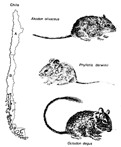

Since 1989 we have conducted monthly censuses of the small mammals (mostly rodents but there is one marsupial) in Fray Jorge National Park (North-Central Chile). This area has highly variable rainfall and this influences the population sizes. In this project we create an interactive graph to display the population trends of the most common species.
Population sizes are estimated with capture-mark-recapture techniques on 0.56 ha (75m x 75m) trapping grids. Population size is expressed as animals per 0.56ha.